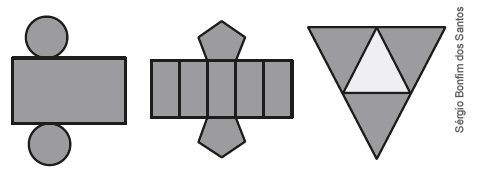

114
CAPÍTULO 4 - Planificação de sólidos geométricos
Lucas observou que a embalagem de pasta de dente tem o formato de um poliedro. Após retirar a pasta de dente de dentro da caixa, ele desmontou-a.
Observe:
![Figura de um manino de perfil esquerdo. Ele segura a embalagem de pasta de dente, nas cores vermelha e azul. Ao lado, a embalagem desmontada. Ela está dividida em cinco retângulos na horizontal. O primeiro tem as extremidades no formato de um triângulo com as pontas cortadas em linha reta. O segundo tem as exterminadas no formato de um retângulo na horizontal. O terceiro tem o mesmo formato do primeiro. O quarto tem o mesmo formato do segundo. O quinto e último retângulo é menor que os quatro acima.](../../resources/images/lucas.PNG)
Ao desmontar a embalagem da pasta de dente, ele obteve a forma planificada da caixa. Neste caso, as faces da embalagem têm o formato de quadriláteros.
Observe o poliedro abaixo e sua planificação.


1. Troque ideias, com o seu colega e com o professor, e depois respondam em seus cadernos às questões a seguir.
a) Qual o nome desse poliedro?
b) Quantos vértices, arestas e faces esse poliedro tem?
c) Ao planificar esse poliedro podemos observar que suas faces são formadas por quais polígonos?
d) Por que é mais comum encontrarmos embalagens no formato de paralelepípedo?
115
ENCONTRE SOLUÇÕES
1. Observe os sólidos geométricos a seguir e relacione cada um deles com suas respectivas planificações.
![Três sólidos geométricos, nomeados com as letras A, B, C. A letra A tem o formato de uma pirâmide. A letra B de uma caixa de leite. A letra C de um dado. Abaixo as planificações nomeadas com os números 1, 2, 3. A planificação de número 1 tem no centro quatro retângulos na vertical. Acima do segundo retângulo, um quadrado. Abaixo do segundo retângulo, outro quadrado. A de número 2 tem no centro quatro quadrados. Acima do segundo quadrado, outro quadrado. Abaixo do segundo quadrado, outro quadrado. A de número 3, se assemelha a uma estrela. O centro é um quadrado. De cada um dos quatro lados do quadrado sai um triângulo.](../../resources/images/abc123.PNG)
2. Qual das planificações abaixo não representa a planificação de um cubo?
![Cinco figuras formadas por quadrados e nomeadas de A, B, C, D, E. A letra A tem a forma de um T. A letra B tem quadro andares no centro. Do andar superior sai um quadrado para a esquerda. Abaixo dele sai um quadrado para a direita. A letra C tem quatro andares no centro. Do andar superior sai um quadrado para a esquerda e no andar do térreo sai outro quadrado à esquerda. A letra D tem quatro andares no centro. Do andar superior sai um quadrado para a esquerda. E do andar térreo sai outro quadrado para a direita. Letra E tem o formato de uma cruz.](../../resources/images/pg117.PNG)
3. Quais sólidos geométricos podem ser montados com as formas planificadas abaixo?
![Cinco figuras nomeadas de A, B, C, D, E. A letra A tem o formato de uma estrela de cinco pontas. A letra B é a quarta parte de um círculo com a parte redonda virada para baixo. Abaixo dele mais à direita, um círculo. A letra C é formada, na parte superior, por dois retângulos na diagonal, um aponta para a esquerda e o outro para a direita. No centro deles, um triângulo. O centro da figura é um retângulo na vertical. E a parte debaixo da figura é um retângulo com o vértice apontado para baixo. A letra D é um retângulo no centro. Acima dele, mais à direita, um círculo. E abaixo do retângulo, na mesma posição do círculo de cima, mais um círculo abaixo. A letra E é uma estrela com seis pontas formadas com triângulos. O centro da estrela é um hexágono.](../../resources/images/a117.PNG)
4. (ENEM) Maria quer inovar sua loja de embalagens e decidiu vender caixas com diferentes formatos. Nas imagens apresentadas estão a planificação dessas caixas.
► Quais serão os sólidos geométricos que Maria obterá a partir da planificação?
a) Cilindro, prima de base pentagonal e pirâmide.
b) Cone, prisma de base pentagonal e pirâmide.
c) Cone, tronco de pirâmide e pirâmide.
d) Cilindro, tronco de pirâmide e prisma.
e) Cilindro, prisma e tronco de cone.